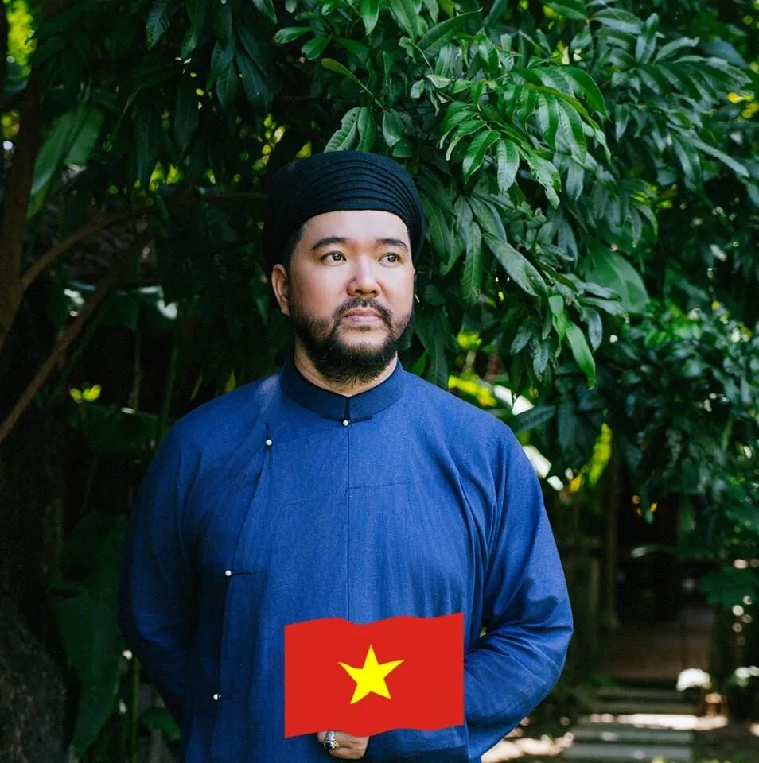
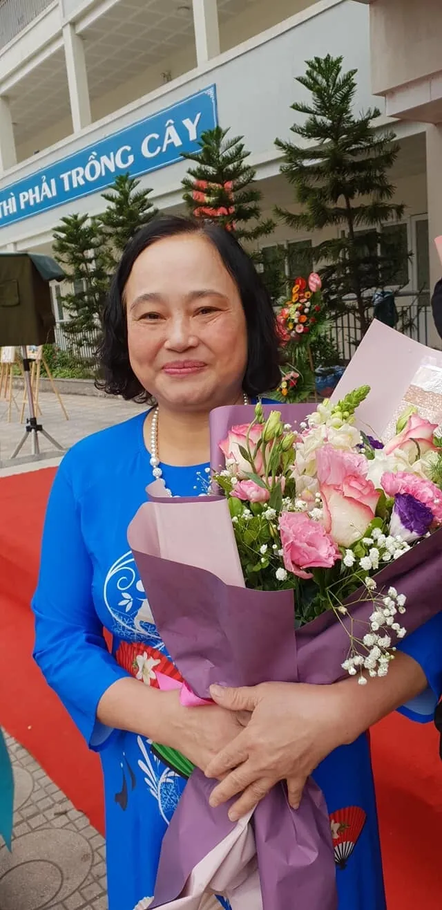

TORONTO, ngày 26/4/2026 — Hội đồng Văn hoá & Giáo dục Canada – Việt Nam (CVCEC) đã nhận hàng chục bộ trang phục truyền thống Việt Nam, gồm áo dài, áo tấc và áo nhật bình, qua Chiến dịch Quyên góp Trang phục Truyền thống.
Các bộ trang phục sẽ được dùng trong các chương trình trình diễn văn hoá, workshop và trải nghiệm chụp ảnh của CVCEC tại Toronto, bắt đầu từ Tháng Di sản châu Á vào tháng 5/2026. Người quyên góp được ghi nhận là “Đại sứ Văn hoá” của CVCEC.
Đối tác

Bà Lê An Na, Viện trưởng Viện Nghiên cứu và Phát triển Văn hoá Việt Nam, đồng hành cùng CVCEC hỗ trợ và tuyển chọn trang phục cho các chương trình trình diễn văn hoá dịp Tháng Di sản châu Á 2026 tại Toronto. Viện thực hiện các nghiên cứu và dự án thực tiễn nhằm bảo tồn và phát triển truyền thống văn hoá Việt.
Nhà thiết kế Quang Hoà tặng hai bộ áo ngũ thân mới, một cho nam và một cho nữ. Anh Quang Hoà làm thiết kế thời trang từ năm 2002, sau 11 năm ở TP. Hồ Chí Minh đã trở về Huế năm 2013 để tập trung phục dựng áo ngũ thân truyền thống. Khách tham dự sự kiện của CVCEC tại Toronto sẽ được mặc thử các bộ áo này.

Nhà hảo tâm
CVCEC trân trọng cảm ơn các nhà hảo tâm dưới đây, nay là Đại sứ Văn hoá của tổ chức.


Nguyen Lien Huong
Giáo viên tiếng Việt, Hà Nội
Tran Van Anh
Giáo viên tiếng Anh, Hà Nội

Sophie Minh Phuong Pham
Nhà sáng lập kiêm hiệu trưởng Sophie Language và Sophie Montessori, Toronto

Nguyen To Trinh
Cán bộ hưu trí

Nguyen Thi Bich Hang
Chủ tịch Hội Phụ nữ phường Sài Đồng, Long Biên, Hà Nội
Phan Thi Nguyet Minh
Trưởng phòng Công tác xã hội, Bệnh viện Đa khoa Đức Giang
Mọi thông tin và hình ảnh của nhà hảo tâm được chia sẻ với sự đồng ý của họ.
CVCEC tiếp tục nhận áo dài và các trang phục truyền thống khác cho bộ sưu tập. Để quyên góp, xin email contact@cvcec.org hoặc nhắn tin WhatsApp, Zalo tới số 647-897-2358.
Sắp diễn ra trong tháng 5
Cuối tháng 5/2026, dịp Tháng Di sản châu Á, CVCEC dự kiến trưng bày các bộ trang phục trong một triển lãm tương tác tại Toronto và tổ chức các buổi mặc thử, chụp ảnh cho khách tham quan.
Về CVCEC
The Canada Vietnam Cultural & Educational Council (CVCEC) is a federally incorporated not-for-profit organization based in Toronto. It offers Vietnamese language and culture classes for children, helps newcomer and international students settle into Canadian schools and connects education communities in Canada and Vietnam. More information is available at cvcec.org.
-30-
Liên hệ báo chí
Phan Thị Quỳnh Trang, Nhà sáng lập kiêm Chủ tịch
Canada Vietnam Cultural & Educational Council
contact@cvcec.org